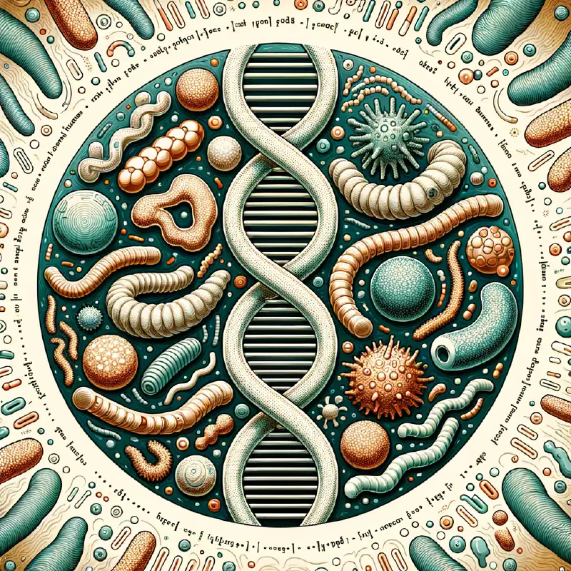
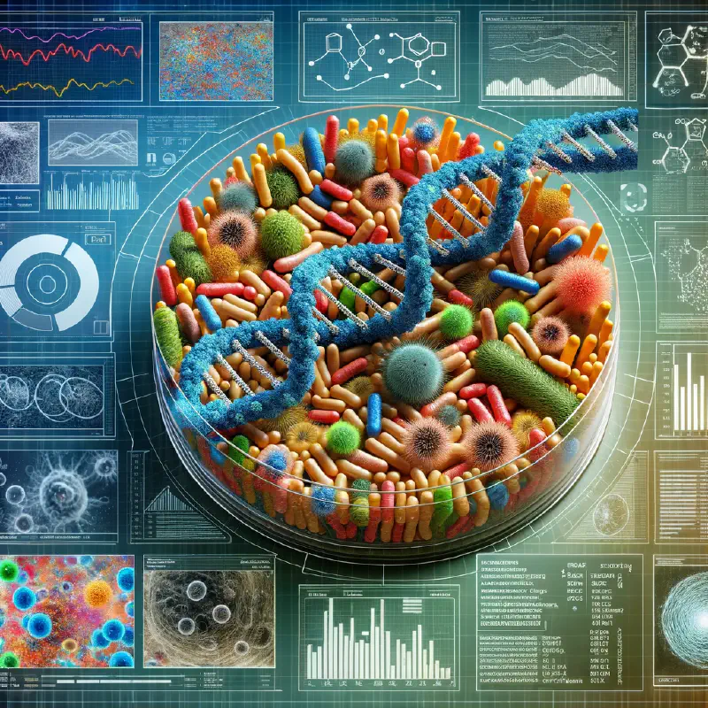

Short Read Metagenomics
This version is built with Go 1.21.1 which contains some relevant security fixes for the html/template package, see Issue 62196 and Issue 62197. This is the main reason Hugo 0.119.0 is released sooner rather than later. But this release also comes with a dependency refresh and some useful image processing improvements:
A new general-purpose Process method and filter. A new Opacity filter.
Release …
De-novo assembly long read
This is pseudo content generated by ChatGPT. De-novo Assembly for Long Read Nanopore Data De-novo assembly refers to the process of assembling genomes from scratch, without the use of a reference genome. This is particularly useful for studying novel organisms or strains. Long-read sequencing technologies, such as Oxford Nanopore, provide reads that are much longer than those generated by …

Taxonomic Profiling
Workflow Summary This workflow is designed for metagenomic profiling, involving steps for quality control, taxonomic classification, and data retrieval:
Input dataset collection:
The workflow starts with an input dataset collection, which is likely to be a set of sequencing reads. Kraken2:
A tool for taxonomic classification, which assigns taxonomic labels to short DNA sequences. Fastp:
A tool for …